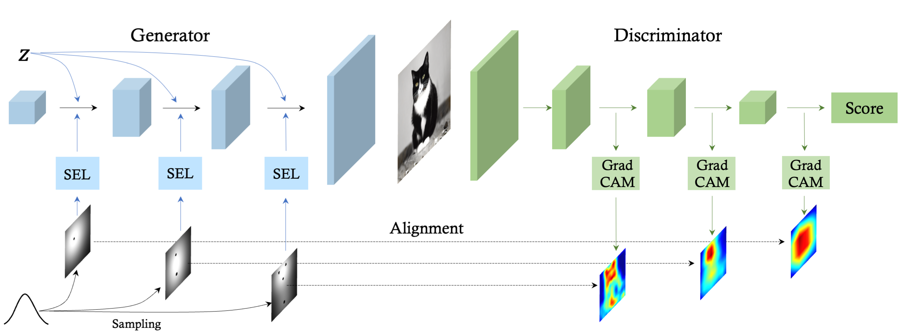

|
Ceyuan Yang PhD Student Department of Information Engineering The Chinese University of Hong Kong E-mail / Google Scholar / Twitter / Github |

|
Biography
Ceyuan Yang is a last-year Ph.D student at Multimedia lab (MMLAB), Department of Information Engineering in The Chinese University of Hong Kong, advised by Prof. Bolei Zhou. He is very interested in representation learning, video understanding and generative models.Before that, He received the B. Eng degree from Honors College in Northwestern Polytechnical University in 2018. From 2017 to 2018, He did an internship in Sensetime Group Limited with Dr. Zhe Wang and Dr. Jianping Shi. He also spent one year from 2018 to 2019 as a research assistant at MMLAB with Prof. Dahua Lin.
Looking for self-motivated interns in generative models in Shanghai Artificial Intelligence Laboratory. Please drop your CV to me if you are interested.
News
- [06/2022] One paper to appear in ECCV'2022.
- [03/2022] Three papers to appear in CVPR'2022.
- [09/2021] One paper to appear in NeurIPS'2021.
- [03/2021] Two papers to appear in CVPR'2021.
- [12/2020] Our HiGAN is finally accepted by IJCV at the end of 2020!!
- [10/2020] Our extended InterFaceGAN is accepted by T-PAMI.
- [09/2020] We release GenForce, an efficient PyTorch library for deep generative modeling.
- [07/2020] One paper to appear in ECCV'2020.
- [04/2020] HiGAN (short) to appear in AI for Content Creation Workshop, CVPR 2020.
- [02/2020] One paper to appear in CVPR'2020.
- [03/2019] One paper to appear in CVPR'2019.
- [06/2018] Two papers to appear in ECCV'2018.
Recent Publications [Full list]

|
Accelerating Diffusion Models via Early Stop of the Diffusion Process,
|

|
Prototypical Contrast Adaptation for Domain Adaptive Semantic Segmentation,
|

|
3D-aware Image Synthesis via Learning Structural and Textural Representations,
|

|
Cross-Model Pseudo-Labeling for Semi-Supervised Action Recognition,
Oral Presentation
|
|  |
Improving GAN Equilibrium by Raising Spatial Awareness,
|

|
One-Shot Generative Domain Adaptation,
|

|
Data-Efficient Instance Generation from Instance Discrimination,
|
Professional activities
- Conference Reviewer for CVPR, ICCV, ECCV, ICLR, AAAI, WACV.
- Journal Reviewer for TOG, TIP, PR.